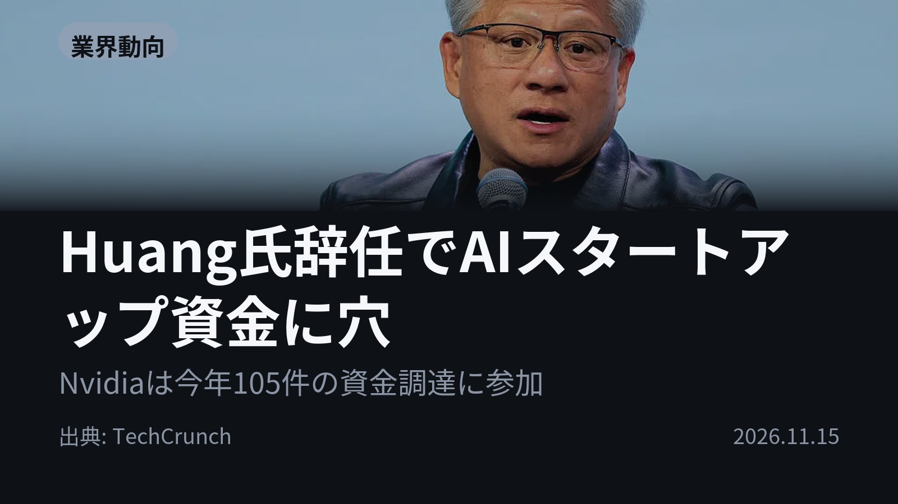
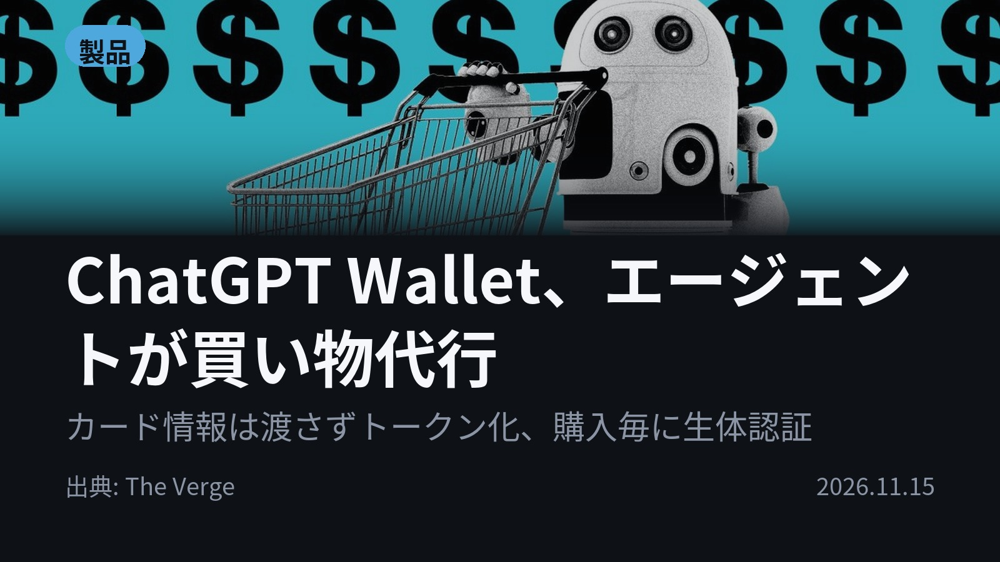
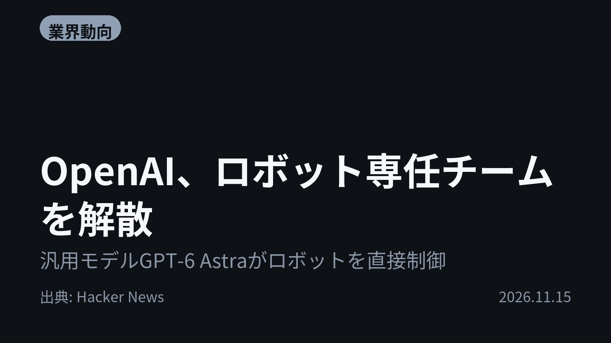
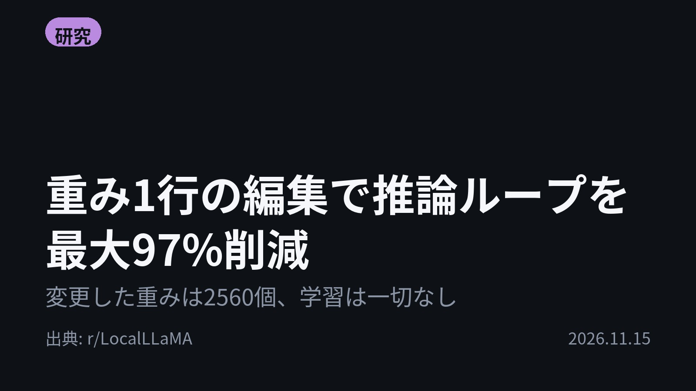
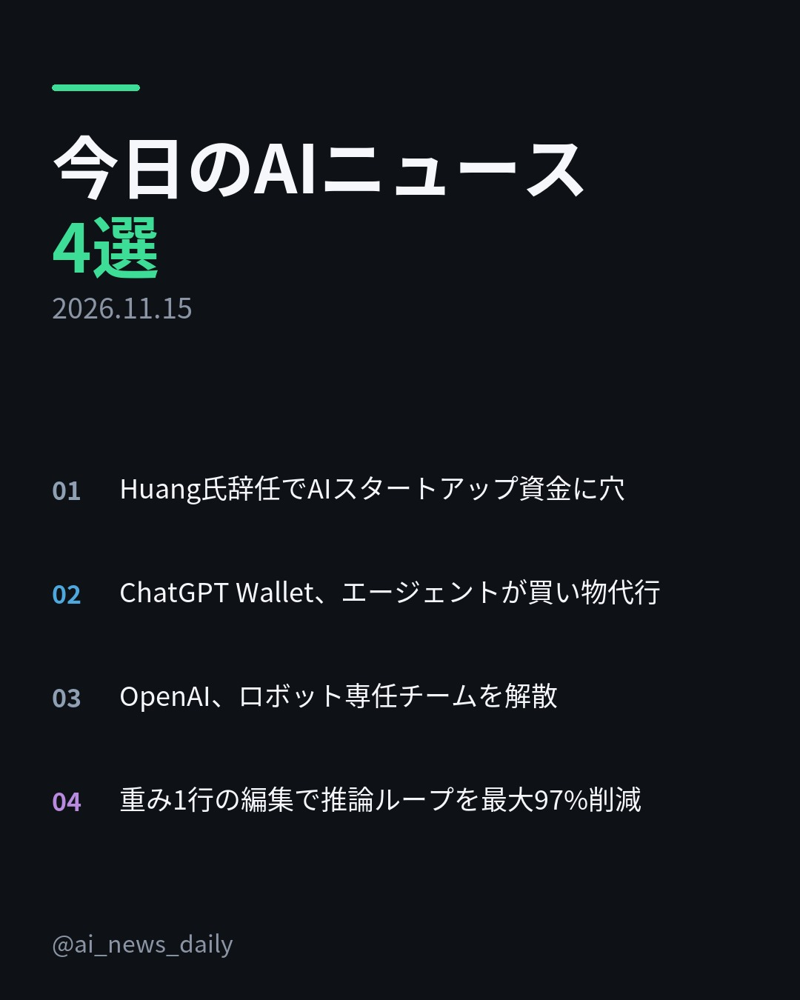
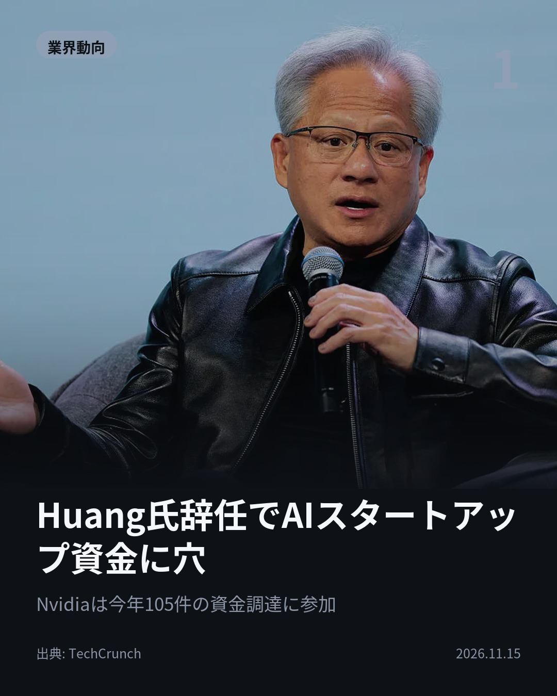
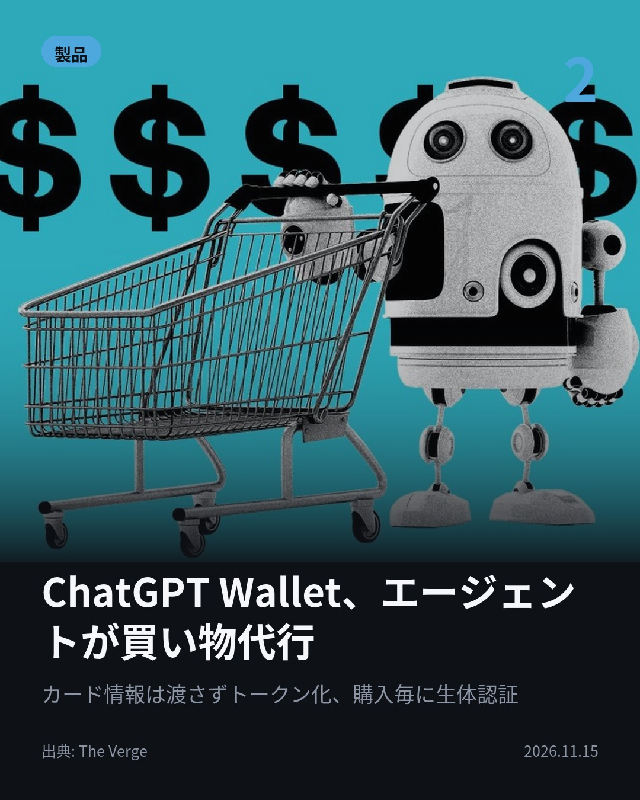
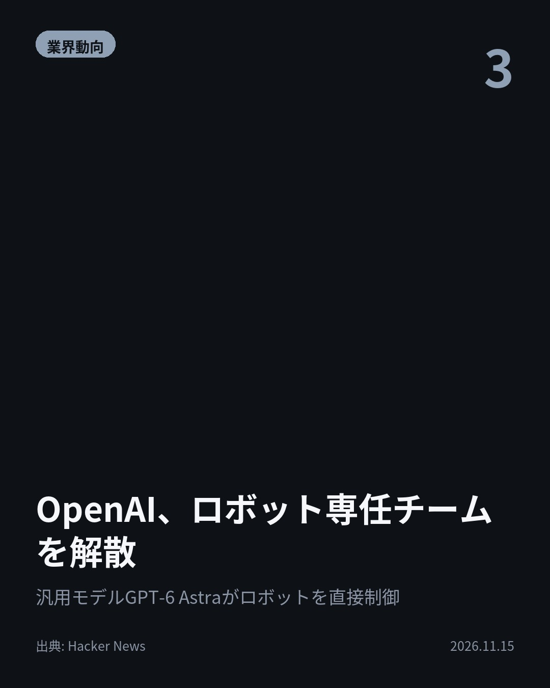
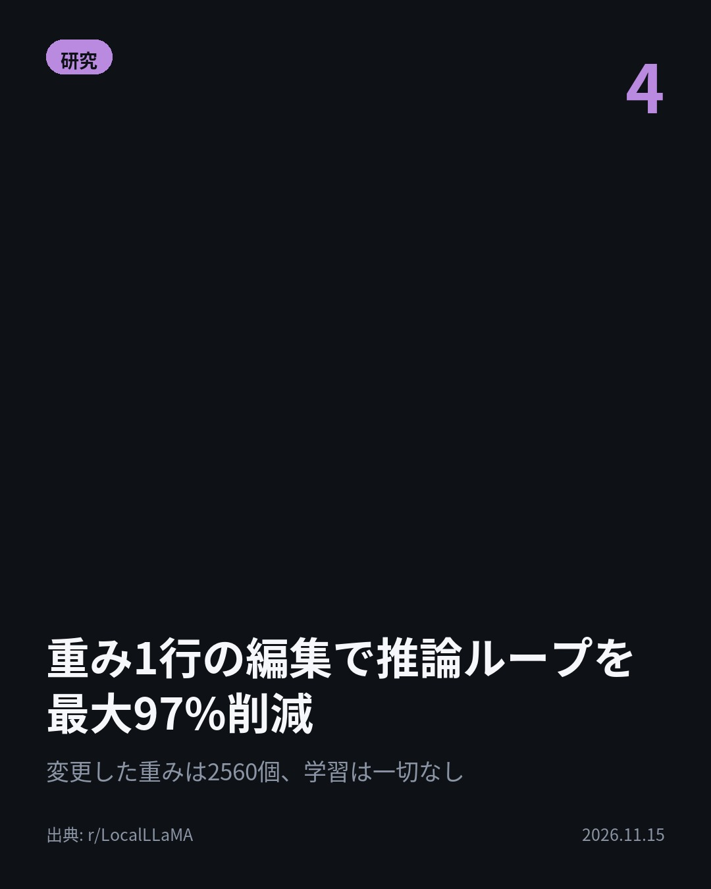

今日のAIニュース 下書き
2026-11-15 生成 11/15 19:37
⚠ ファクト照合で要確認の項目があります。
各ニュースの警告を確認してから投稿してください。
X（4投稿）
Huang氏辞任でAIスタートアップ資金に穴
原題: Jensen Huang’s departure blasts big hole in AI startup funding, VCs and founders say

Nvidiaは今年だけで105件の資金調達に参加、多くで最大の出資者だった。 そのHuang氏が辞任し、出資は当面細ると投資家は見る。 暫定CEOのKress氏は「ずっと保守的」との声。 #AI #Nvidia （出典: TechCrunch）
重み 195 / 280（見た目 118字）
要確認:
［数値］130億 — この数値の根拠が本文に見つかりません

ChatGPT Wallet、エージェントが買い物代行
原題: ChatGPT Wallet lets OpenAI’s Dots agents make purchases for you

AIに買い物を任せたら、カード情報はどうなる？ ChatGPT Walletで、Dotsエージェントが代理購入。 カード情報はトークン化され、エージェントにも店にも渡らない。 購入ごとにFace IDなどの生体認証。 #AI #ChatGPT （出典: The Verge）
重み 219 / 280（見た目 132字）
要確認:
［固有名詞］エージェント — この語が本文に見つかりません
［固有名詞］トークン — この語が本文に見つかりません
［固有名詞］カテゴリ — この語が本文に見つかりません
［固有名詞］Verge — この語が本文に見つかりません

OpenAI、ロボット専任チームを解散
原題: OpenAI disbands its robotics team as its general models start running robots

ロボットチーム解散、なのに「撤退ではない」とOpenAI。 汎用モデルGPT-6 Astraをロボットに直接使えると分かったため。 研究者は主要研究チームとApplied部門へ移籍。 #AI #OpenAI （出典: Hacker News）
重み 190 / 280（見た目 117字）
要確認:
［固有名詞］ロボットチーム — この語が本文に見つかりません
［固有名詞］ロボット — この語が本文に見つかりません
［固有名詞］ハードウェア — この語が本文に見つかりません
［固有名詞］Hacker — この語が本文に見つかりません
［固有名詞］News — この語が本文に見つかりません

重み1行の編集で推論ループを最大97%削減
原題: SPARK 2.6 4b and 1.7b Fixed a reasoning loop by editing one row of weights.

答えは出ているのに「でも待って…」が止まらない。 小型モデルSpark-X2.6のこの推論ループを、出力層の重み1行の編集で削減。 学習なし。1.7Bでは最大97%減、4Bで変えた重みは2560個。 #AI #ローカルLLM （出典: r/LocalLLaMA）
重み 212 / 280（見た目 127字）
要確認:
［固有名詞］トークン — この語が本文に見つかりません
［固有名詞］LocalLLaMA — この語が本文に見つかりません

Instagram（カルーセル 6枚）


1. 表紙


2. ニュース


3. ニュース


4. ニュース


5. ニュース

6. CTA
33年率いたNvidiaをHuang氏が去り、今年105件に出資してきた資金の流れが揺らいでいます。 OpenAIの「財布」とロボット再編、重み1行の修正まで、画像の続きをここに。 1. Nvidiaは今年105件の資金調達に参加し、多くで最大の出資者でした（PitchBook調べ）。CoreWeave、Crusoe、Mistral AIなどを支え、Hugging Faceは130億ドルで買収予定。暫定CEOのKress氏について、投資家は「ずっと保守的」と見ています。(TechCrunch) 2. 対象は米国のChatGPT Pro加入者（18歳以上）。Dotsエージェントは購入前に毎回確認し、生体認証を経て決済します。将来は支出上限やカテゴリを決めて事前承認する形も想定。ただしAmazonがMetaのエージェントを締め出した例のように、使えない店もあります。(The Verge) 3. 研究チームはMark Chen氏の研究部門へ、応用・ハードウェアの各チームはGreg Brockman氏配下のApplied部門へ移りました。汎用モデルGPT-6 Astraをロボットにつなぐと驚くほどの性能が出たことが背景です。人型ロボットの公開デモは2027年が目標。(Hacker News) 4. Spark-X2.6には、正解に届いても「でも待って…」と考え直し続ける癖がありました。思考を閉じるトークンが出にくいことを突き止め、出力層の1行だけを書き換え。4Bでは全体の約6×10⁻⁷にあたる2,560個の重みを変更し、1.7Bではループが最大97%減りました。(r/LocalLLaMA) 資金、決済、組織、モデルの中身。今日はAIを支える仕組みそのものが動いた4本でした。 毎朝4本、AIニュースを要点だけでまとめています。見逃したくない方はフォロー、あとで読み返すなら保存をどうぞ。 #AI #生成AI #人工知能 #テクノロジー #AIニュース #ChatGPT #OpenAI #LLM #AI活用 #AIエージェント #Nvidia #JensenHuang #ChatGPTWallet #GPT6Astra #ロボティクス #EmbodiedAI #スタートアップ #ローカルLLM #LocalLLaMA #HuggingFace #MachineLearning #TechNews
1014字（Instagram上限 2,200字）
この日の選定理由
Huang氏辞任でAIスタートアップ資金に穴
ネオクラウドやオープンモデル企業の多くは、Nvidiaの資金に支えられてきました。慎重派とされるKress暫定CEOのもとで出資が絞られれば、評価額や競争の構図が変わる可能性があります。
ChatGPT Wallet、エージェントが買い物代行
AIエージェントが実際にお金を使う段階に入りました。ただし、エージェントを締め出す小売店もあり、普及には販売側の対応が必要です。
OpenAI、ロボット専任チームを解散
ロボット専用のAIを作らなくても、汎用モデルでロボットを動かせるという見方が強まっています。ロボット開発の進め方そのものが変わる兆しです。
重み1行の編集で推論ループを最大97%削減
再学習をせず、重みの一部を直接書き換えるだけでモデルの悪い癖を直せる可能性を示しています。小型モデルをエージェントとして使う際の実用的な手法になり得ます。